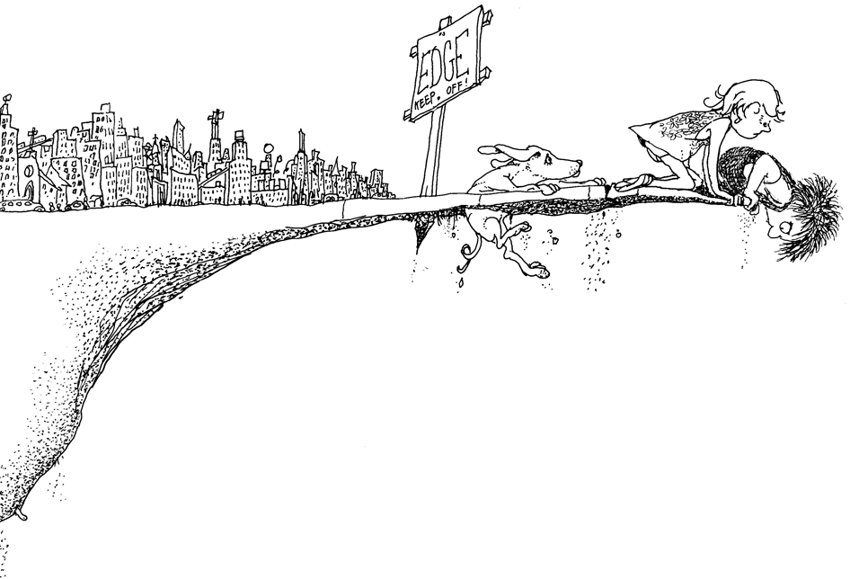

Where The Sidewalk Ends
by Shel Silverstein
Reviews
Lisa Johnson: "Poetry is a great style of writing to include in bedtime or anytime reading, and this is a classic source. I find I'm trying to cut myself off to keep their bedtime, and end up reading 5 more with them. The sawtoothed snail that lives up children's noses worried my daughter (who's a nose picker), but was easily recovered. This book is good for adults too."Everson McDaniels: "Yes! It is one of the best anthologies of poetry ever written. And, while I would sooner recommend Skipping Across The Rainbow Sea by KT Iversen for younger children, anything by Shel Silverstein is worthy of reading by those 13 and older!"